Autotrophic
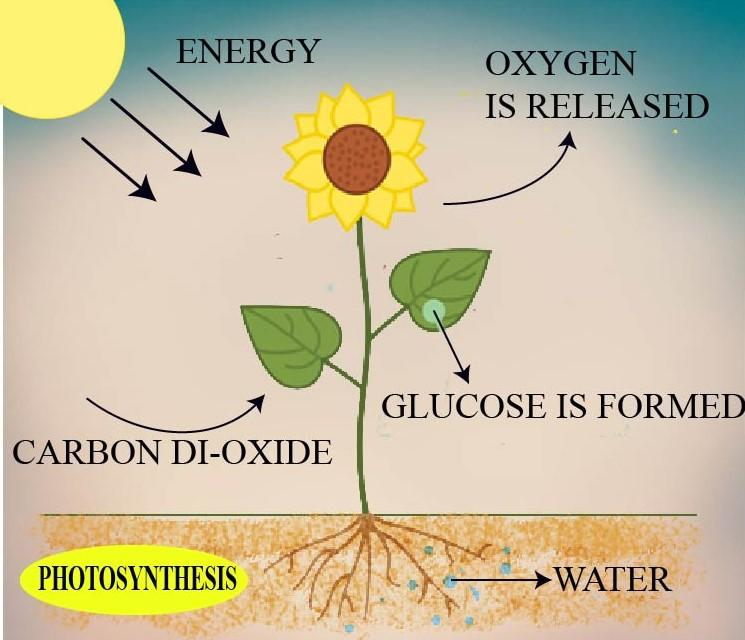
Green plant
- Makes its own food by photosynthesis.
Ch7 · The seven processes
Nutrition is one of the seven characteristics of life. Humans use holozoic nutrition: they take in solid food, break it down, absorb the useful molecules, and use them in cells.
These notes follow the seven processes in order: the nutrition process, the human digestive tract and glands, teeth and swallowing, then peristalsis, digestion, absorption, transport and the liver, then the large intestine and egestion.
| Process | Focus | Hold this line |
|---|---|---|
| 01 Nutrition process | Five holozoic steps and four modes | Egestion is not excretion |
| 02 Human Digestive Tract & Glands | Names in order, 1 to 9 | Ileum is the long coiled part |
| 03 Teeth, swallowing, and peristalsis | Chewing, bolus into oesophagus, then muscle wave | Food moves one way only |
| 04 Digestion | Physical first, then enzymes | Bile has no enzyme |
| 05 Absorption | Villi, two routes, dialysis model | Lipids rejoin the blood before the heart |
| 06 Transport and liver | Routes, use, and storage | Deamination happens only after absorption |
| 07 Large intestine | Final water uptake and faeces | No digestion after the ileum |
Key idea
| Step | One word |
|---|---|
| Ingestion | Mouth |
| Digestion | Breakdown |
| Absorption | Enter |
| Assimilation | Use |
| Egestion | Faeces |
| Food | Starts | Finished before |
|---|---|---|
| Starch | Mouth | Large intestine |
| Protein | Stomach | Large intestine |
| Lipid | Duodenum | Large intestine |
| Dietary fibre | Never digested | Leaves in faeces |
Humans cannot make their own food. They ingest it, digest it into small soluble molecules, absorb those molecules, and cells use them for metabolism.
| Process | Definition | Words to use | Animation |
|---|---|---|---|
| Ingestion | Food is taken in through the mouth cavity. | Mouth, taken in, intake | 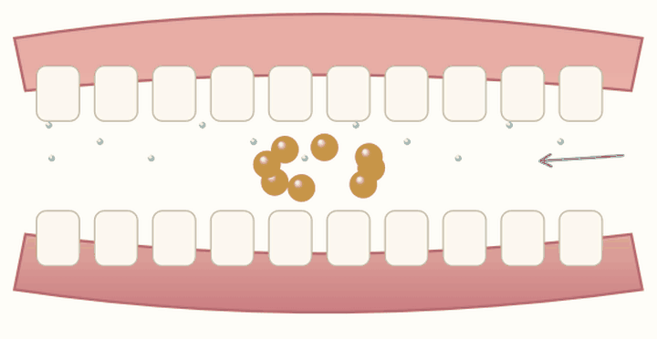 |
| Digestion | Breakdown into small, simple, soluble molecules, ready for absorption. | Breakdown, hydrolyse, enzyme, grind, cut | 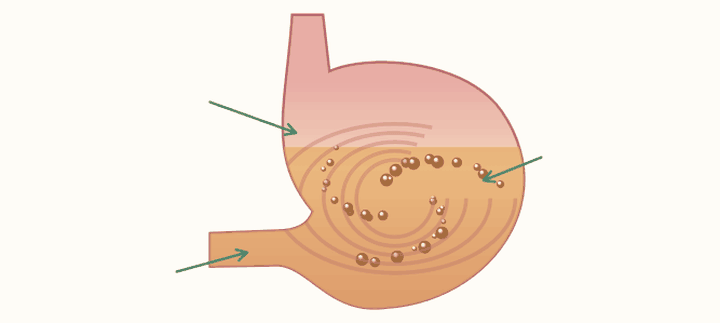 |
| Absorption | Entry of molecules into the circulatory transport system. | Enter, diffuse, active transport, blood, lymph | |
| Assimilation | Cells take up molecules for metabolism, both building up and breaking down. | Use, build, make, anabolism, growth and repair | 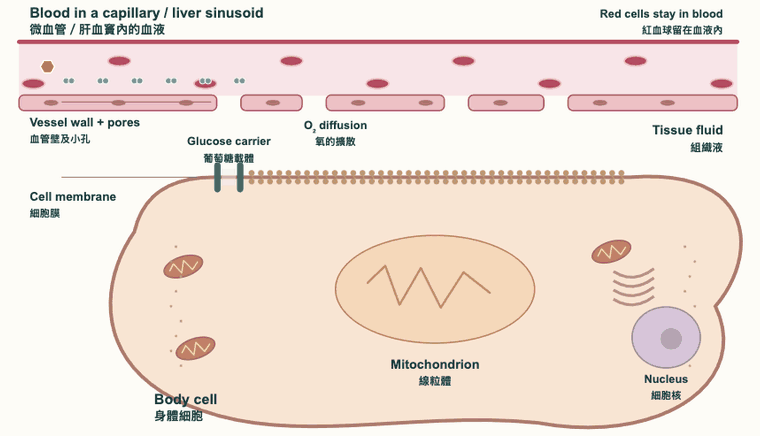 |
| Egestion | Removal of undigested and unabsorbed material as faeces. | Faeces, undigested. Not urine, urea, or carbon dioxide | 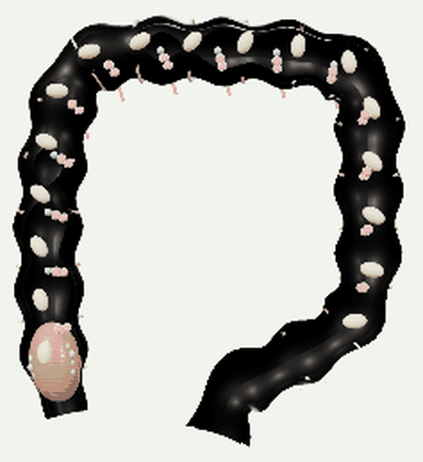 |

Green plant
Holozoic, saprophytic, and parasitic nutrition all use ready-made organic food. Saprophytes and parasites both absorb soluble food.
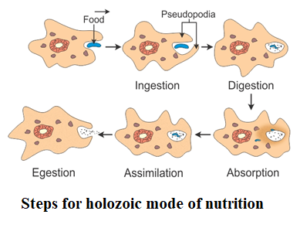
Human, dog
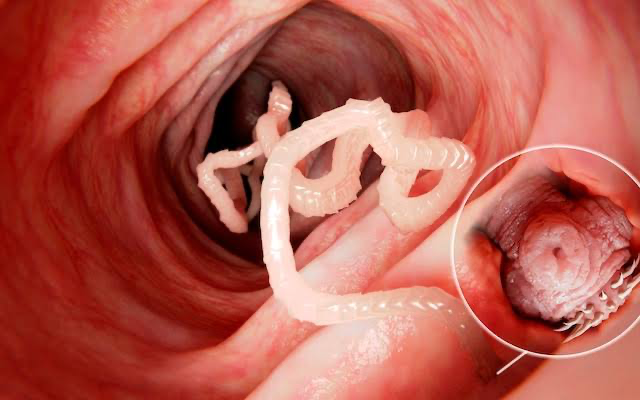
Tapeworm
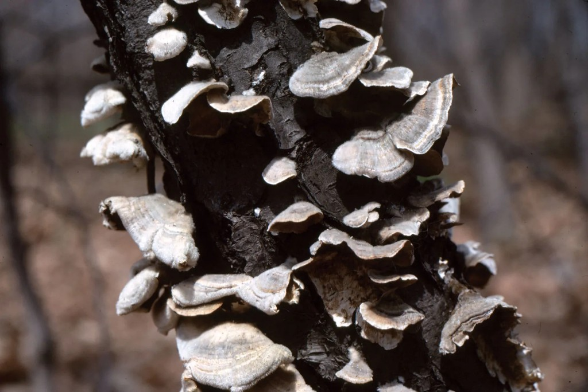
Mushroom, bread mould
Learn each name and its place in the sequence. The alimentary canal is one tube. What each gland pours in is in the juices table.
Food passes through this one tube, in this order.
The appendix: ✅ canal ❌ a gland
These pour juice or bile into the tube. Food does not enter them.
gall bladder: ❌ a gland ❌ food enter
Physical digestion starts in the mouth. Swallowing sends the bolus into the oesophagus. Peristalsis then pushes food along the rest of the tube. The gut wall has circular muscle on the inside and longitudinal muscle on the outside.
| Type | Shape | Job | Roots | Animation |
|---|---|---|---|---|
| Incisor | Chisel-shaped, flat sharp edge | Biting and cutting | One | |
| Canine | Pointed and curved | Tearing flesh | One | 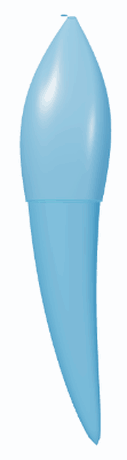 |
| Premolar | Broad top with cusps | Crushing and grinding | One or two | |
| Molar | Like a premolar, but larger | Crushing and grinding | Two or three | 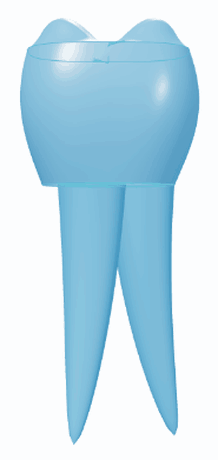 |
A dental formula consists of 4 tooth types: incisors, canines, premolars, and molars, in that order.
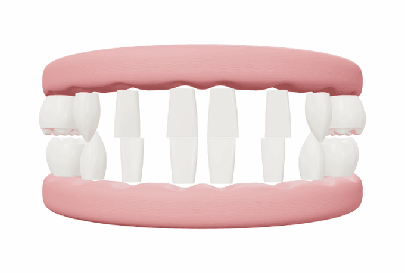
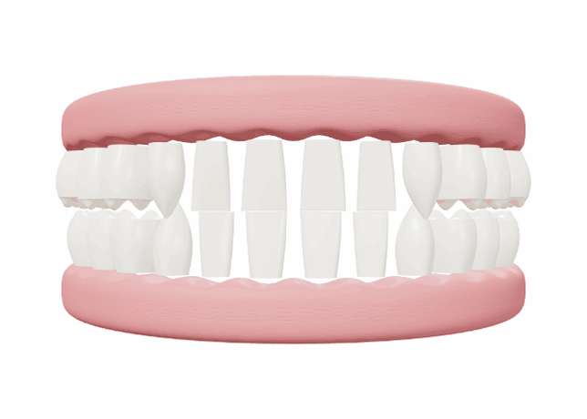
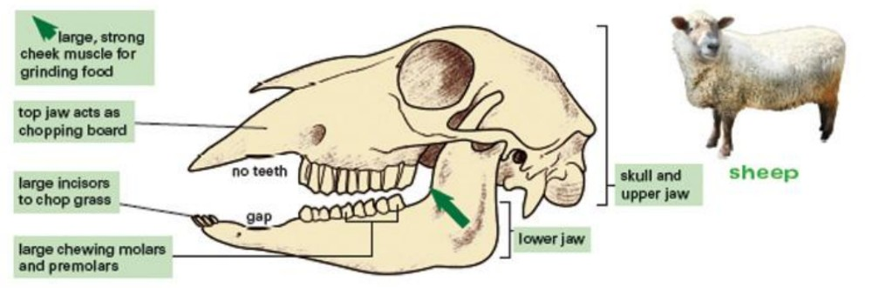
Sheep, cow
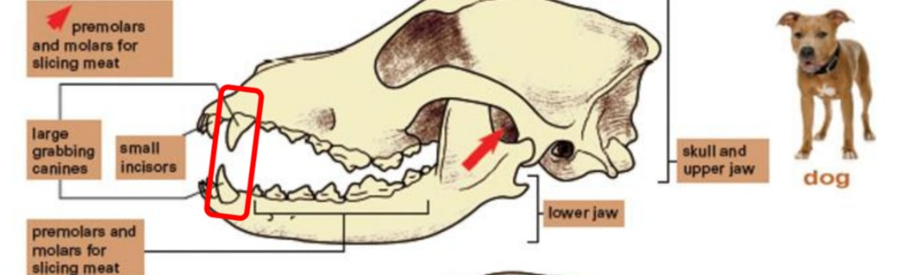
Dog, cat
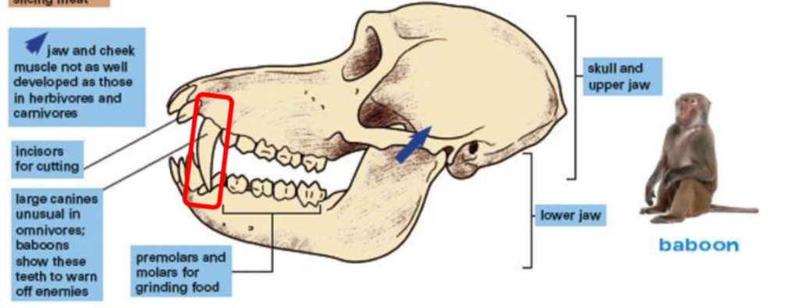
Human, baboon
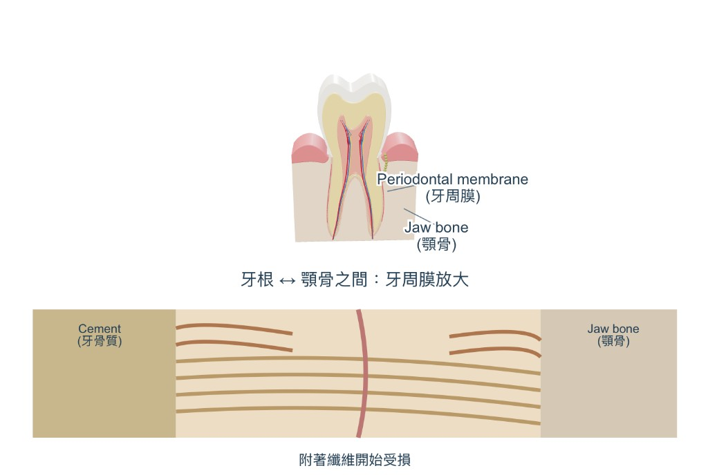
Physical digestion prepares food for chemical digestion. It breaks food into smaller pieces and increases the surface area for juice to act on. Enzymes then break molecules into simpler ones.
| Juice | Made by | What is in it | Medium | What it digests | Animation |
|---|---|---|---|---|---|
| Saliva | Salivary glands |
|
Neutral | Starch, chemical | |
| Gastric juice | Gastric glands in the stomach wall |
|
Acidic | Proteins, chemical | |
| Intestinal juice | Cells on the small intestine wall |
|
Alkaline | None by itself | 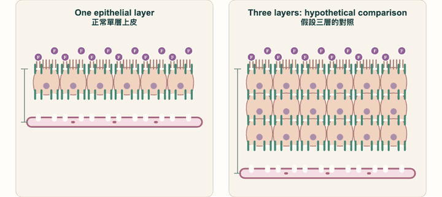 |
| Pancreatic juice | Pancreas, to the duodenum by the pancreatic duct |
|
Alkaline | Proteins, starch, lipids, chemical | |
| Bile | Liver. Stored in the gall bladder. To the duodenum by the bile duct |
|
Alkaline | Lipids, physical only | |
| Enzymes on ileum cells | Epithelium of the small intestine |
|
Alkaline | Proteins and carbohydrates, chemical |
| Place | Physical | Chemical | Food is called |
|---|---|---|---|
| Mouth | Mastication | Salivary amylase on starch | Bolus |
| Oesophagus | Peristalsis | Salivary amylase still works | Bolus |
| Stomach | Churning | Gastric juice, pepsin on protein. Salivary amylase is denatured | Chyme |
| Duodenum | Bile emulsifies lipids | Pancreatic amylase, lipase, and protease | Chyme |
| Ileum | Peristalsis | Carbohydrases and peptidase on the wall. Digestion finishes here | Chyme |
| Colon | Peristalsis and compaction | No digestion | Faeces |
| Rectum | Stores faeces | No digestion | Faeces |
| Anus | Egestion | No digestion | Faeces |
Absorption is molecules entering the blood or the lymph. The small intestine is built to give time, surface, a short distance, and a steep concentration gradient.
Food molecules
Water only
Food molecules
Coeliac disease
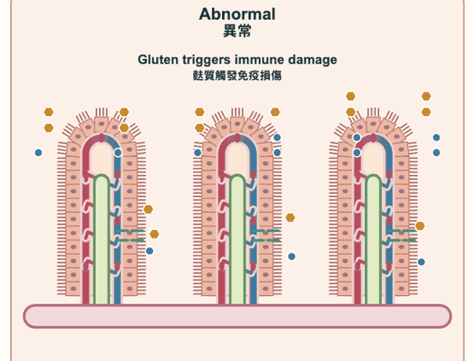
Water-soluble food reaches the liver in the blood first, then the body. Lipids travel in lymph and join the blood before the heart, so they meet the liver later.
| Vessel | Carries | Direction |
|---|---|---|
| Hepatic portal vein | After a meal: most water-soluble nutrients, including monosaccharides, amino acids, minerals, vitamins B and C, and water | Small intestine to liver |
| Hepatic vein | Processed nutrients. Urea after a protein meal. The most glucose during starvation, from glycogen | Liver to heart |
| Vena cava | Blood returning to the heart | Towards the heart |
| Aorta | Blood for the whole body | Heart to the body |
| Lymph vessel | Lipids and fat-soluble vitamins. It rejoins blood at the subclavian vein | Towards the heart |
| Nutrient | Used for | If there is extra | Animation |
|---|---|---|---|
| Glucose | Releasing energy | Glycogen in the liver and muscles, or lipid in the liver | |
| Amino acids | Proteins for growth and repair, plus enzymes, antibodies, and hormones | Deamination. The amino group becomes urea and is excreted in urine. The remaining part can become glucose, glycogen, or lipid | |
| Lipids | Energy store, cell membranes, and sex hormones | Deposited around organs and built into adipose tissue, including fat under the skin |
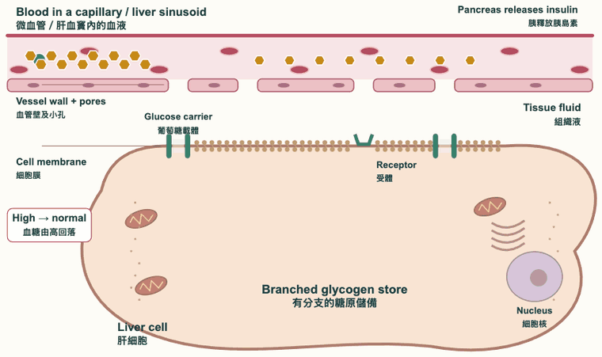
| Job | Detail | Animation |
|---|---|---|
| Regulating | Insulin rises: glucose becomes glycogen, so blood glucose falls. Glucagon rises: glycogen becomes glucose, so blood glucose rises. Insulin does not work if it is swallowed. It is a protein, so proteases in the gut digest it before it can reach the blood. It has to be injected. | |
| Storing | Glycogen, iron from broken red blood cells, and vitamins A, D, E, and K. | |
| Producing | Bile, and vitamin A made from carotene. | |
| Deaminating |
|
|
| Detoxifying | Mild toxic substances are processed. Catalase breaks down hydrogen peroxide. |
There is no digestion in the large intestine. Most food, and most water, has already been absorbed in the small intestine. What leaves through the anus is faeces only.
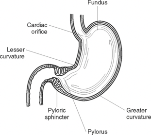
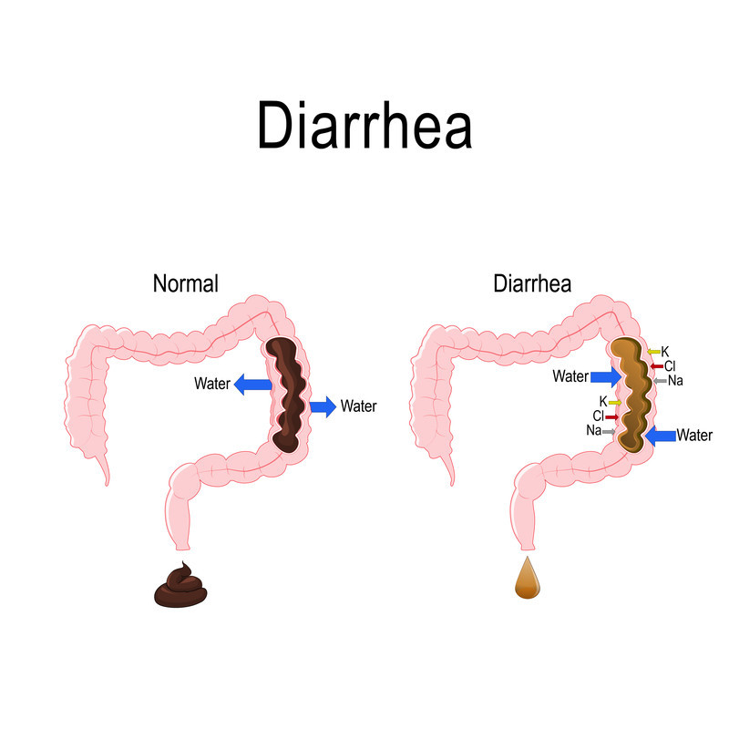
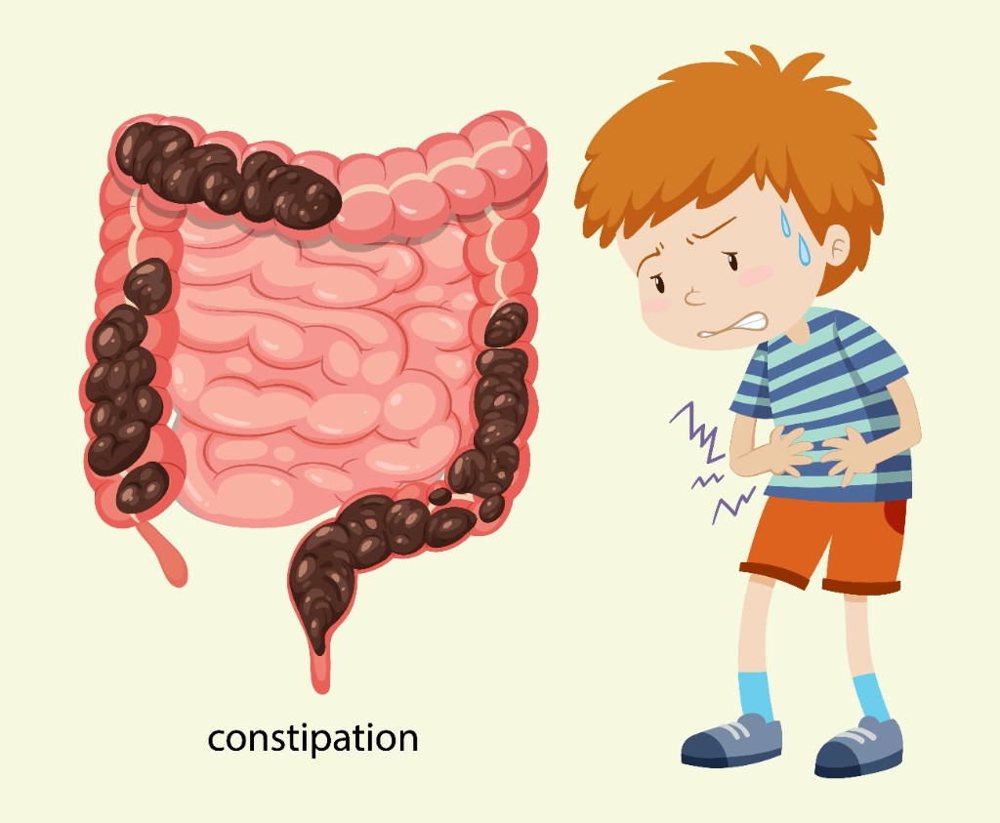
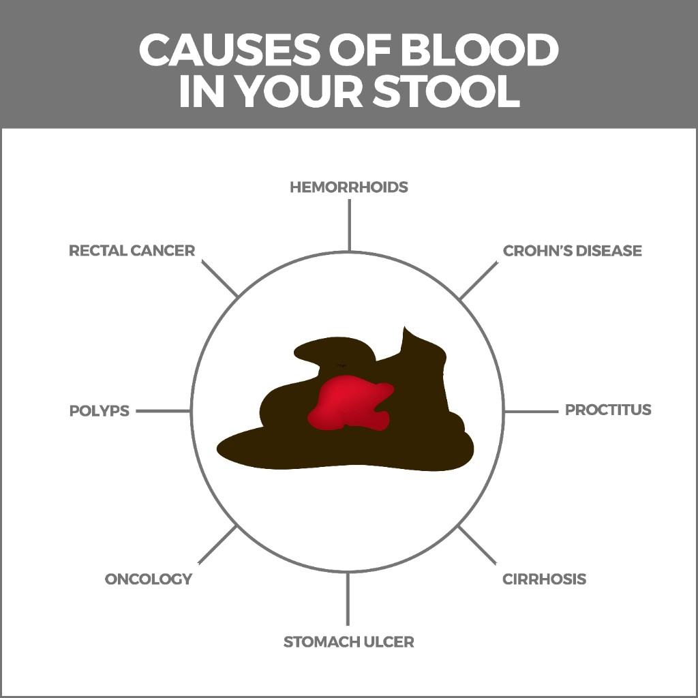